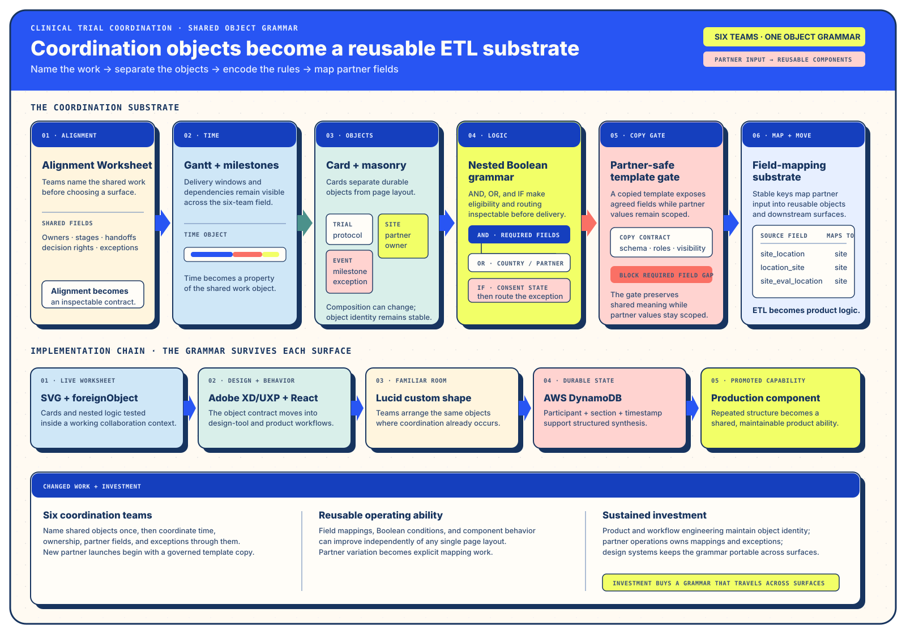

Track ISolution Architecture · Purpose and Changed WorkMove six working truths into one inspectable rule grammar.
I. Solution Architecture — From six perspectives to one rule grammar
§a Debrief — The Engagement and Its Stakes
In Q2 2019, FMI’s Data Products Team commissioned a complete reimagining of its internal clinical trial coordination software. The principal product-design role carried an explicit cross-business-unit mandate: understand the work wherever it lived, then create a surface capable of supporting a more automated future.1
Clinical trial coordination connected FMI’s tumor-profiling capability with biopharma partners seeking molecularly precise cohorts. A broad trial could miss the subgroup whose molecular mechanism changed the therapeutic response; the relevant signal might already exist in the variant database. Making that signal findable, interpretable, and usable at the right point in trial planning was a software and operating-model concern. Each record ultimately represented a person living with late-stage cancer, so cohort integrity and timely discovery carried clinical consequence alongside commercial value.
§b The Bottleneck — There Was No Alignment
The working groups held three materially different pictures of the future. One picture replaced the existing selector-heavy tool with a standalone product. Another placed the work inside a wider internal suite. A third expanded the primary population to include a newer, code-first Genomics Insights team already querying the variant database through Python and Jupyter notebooks. Each picture changed data ownership, workflow scope, implementation sequence, and team handoff.
Alignment was the first delivery. Shadowing with Data Managers and curation scientists surfaced partner rules held in memory, folder names carrying several overloaded fields, and careful cursor-driven mapping work that already behaved like a human-executed ETL pipeline. Conversations with code-first genomics specialists and the centralized engineering group added different definitions of useful precision and feasible ownership.
| Population | Truth they carried | Decision the shared grammar had to support | Useful representation |
|---|---|---|---|
| Account management | Partner goals, relationship history, and engagement-specific constraints. | Which variation protects the partnership and which variation can become a reusable rule? | Partner-scoped fields and visible exception boundaries. |
| Data management | Detailed mappings, naming differences, study setup, and operational edge cases. | Which rule produces a correct, reviewable cohort from explicit mappings? | Composable fields, nested groups, and guarded templates. |
| Genomics Insights | Variant-level inquiry and code-first filtering against the genomics database. | Can a visible surface preserve the expressive power of an investigation? | A related boolean grammar over genomics-specific fields. |
| Engineering and platform | Implementation ownership, state behavior, error paths, and production boundaries. | Can the design expose enough logic and state to support a direct build? | Explicit operators, card states, dispatches, and gates. |
| Design and research | Cross-team fieldwork, conflicting mental models, and reusable architecture primitives. | Which artifact lets each group correct the same model together? | Alignment worksheet plus three Core Architectures. |
| Coordination leadership | Rollout, training, operational continuity, and the portfolio of related internal systems. | Which shape can scale across teams while preserving accountable partner differences? | One extensible grammar with named reuse gates. |

§c The Intervention — The Alignment Worksheet, the Core Architectures, and the Boolean Building Blocks
The intervention joined three layers. First, each group received a five-prompt Alignment Worksheet before a joint session: who is acting today, what they want, which workflow they perform, why its consequence matters, and which future state the group will create together. The session spent more than an hour on the first three prompts. That time exposed incompatible assumptions early enough for the group to turn them into design inputs.
Second, the design team brought three brand-aligned Core Architectures rather than a single proposed screen. A Gantt-style timeline exposed parallel work, geography, notification, role, and permission constraints. A card or masonry view decomposed familiar objects into attributes, relationships, states, and abilities still to surface. Boolean building blocks made chained logic visible through AND, OR, IF, and nested parenthetical groups. Each architecture gave participants a concrete object to correct while preserving space for the operating model to emerge.
The boolean building blocks became the shared grammar. Data Managers could compose, branch, and move rule groups; copy a whole template between permitted projects; and see the partner-separation gate that prevented an inapplicable setup from seeding another engagement. Genomics specialists could use the same grammar over a related field set. Engineering could see form dispatches, rule paths, error states, roles, and extension points.


§d The Outcome — Built in a Quarter, Adopted Across Surfaces
Directors responded to the preliminary design by asking about training, onboarding, rollout sequence, parallel operation, and cutover. A clickable prototype would have hidden the special cases that mattered, so the design handoff included complete screens, component states, rule branches, errors, and the partner-template gate. The participant account reports that engineering built the application in one quarter, with the design remaining stable through the build.1
The flow was legible because it rendered the logic chain directly. Engineering could see how forms dispatched, how states changed, where roles acted, and where new fields or rule types could extend the system. Data Managers received a surface that preserved their detailed coordination knowledge in explicit structures. Genomics Insights received a related surface for investigation. Directors received an actionable rollout plan.
The deeper outcome arrived in 2023. Once an incoming partner schema could populate the visible boolean elements, the system could compare its initial rule state with the human-edited, ship-ready state. That diff identified the rules ready for repeatable automation and the locations where expert judgment continued to create value. The numeric partner-specific diff remains undisclosed; the operating method is the material result.3
§e Repeatability — Substrate Intent as a Portable Practice
- Maintain a small set of Core Architectures. A timeline, object decomposition, and rule grammar help cross-functional groups discuss the substrate before selecting a surface.
- Use alignment artifacts to expose consequential disagreement. Time spent clarifying the first prompts reduces downstream ambiguity in ownership, state, and rollout.
- Design with substrate intent. Give tomorrow’s users a coherent interface and give the future system an explicit grammar it can extend.
- Pair a gentle refusal with a concrete offer. Preserve the user’s need while moving from overloaded strings or remembered mappings toward structured, inspectable fields.
- Protect the mission-critical gate. A rule that prevents one partner’s setup from seeding another can preserve a contract years before the next automation phase arrives.
- Earn the next question. A durable grammar lets a later collaborator recognize a new capability inside an existing design.